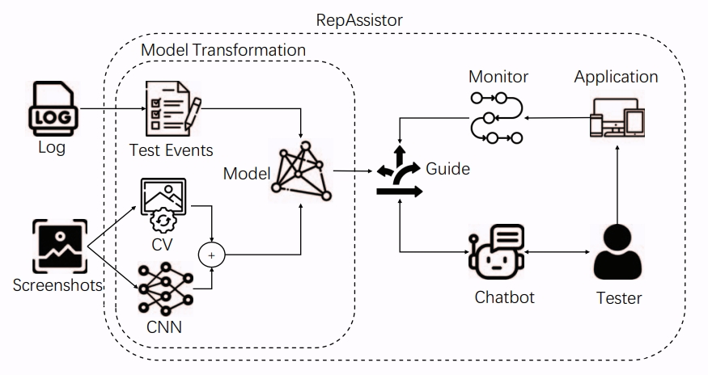

Biography
I am a second-year M.S. student at Tsinghua University. My research interests include LLM Post-Training, LLM Safety and Agentic RL.
📝 Publications

Towards Effective Bug Reproduction for Mobile Applications
Xin Li, Shengcheng Yu, Lifan Sun, Yuexiao Liu, Chunrong Fang.
DSA 2023 Best Paper Award Paper
🎖 Selected Honors
- 2024 – Outstanding Graduate, Nanjing University
- 2023 – National Scholarship (top 1%)
📖 Educations
- 2024.09 – 2027.06, M.S. in Data Science and Information Technology, Tsinghua University.
- 2020.09 – 2024.06, B.Eng. in Software Engineering, Nanjing University.